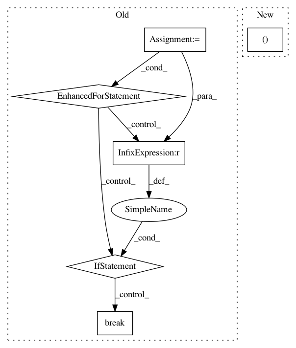

ca337ebba627326cd7b15b454053e31f51b5e441,pgmpy/inference/Sampling.py,BayesianModelSampling,rejection_sample,#BayesianModelSampling#,75
Before Change
while len(sampled) < size:
_size = int((size - len(sampled)) / prob)
_sampled = self.forward_sample(_size)
for i in range(_size):
for var in evidence:
if evidence[var] != _sampled[var][i]:
_sampled.drop(i, inplace=True)
break
prob = max(len(_sampled) / _size, 0.01) // 0.01 assumed if len(sampled) is small or zero
sampled = sampled.append(_sampled)
sampled.reset_index(inplace=True, drop=True)
return sampled[:size]
After Change
_size = int(((size - len(sampled)) / prob) * 1.5)
_sampled = self.forward_sample(_size)
for evid in evidence:
_sampled = _sampled[_sampled.ix[:, evid.var] == evid]
prob = max(len(_sampled) / _size, 0.01)
sampled = sampled.append(_sampled)
sampled.reset_index(inplace=True, drop=True)
In pattern: SUPERPATTERN
Frequency: 3
Non-data size: 6
Instances
Project Name: pgmpy/pgmpy
Commit Name: ca337ebba627326cd7b15b454053e31f51b5e441
Time: 2015-06-16
Author: ankurankan@gmail.com
File Name: pgmpy/inference/Sampling.py
Class Name: BayesianModelSampling
Method Name: rejection_sample
Project Name: pgmpy/pgmpy
Commit Name: b95f40991c2a34fa0a143cd22257517f703a5b71
Time: 2014-01-29
Author: abinash.panda.ece10@itbhu.ac.in
File Name: pgmpy/BayesianModel/BayesianModel.py
Class Name: BayesianModel
Method Name: set_observations
Project Name: tech-srl/code2vec
Commit Name: d806f81888342b0652d320bd387b895deb454156
Time: 2019-04-15
Author: eladnah@gmail.com
File Name: tensorflow_model.py
Class Name: Code2VecModel
Method Name: _log_predictions_during_evaluation